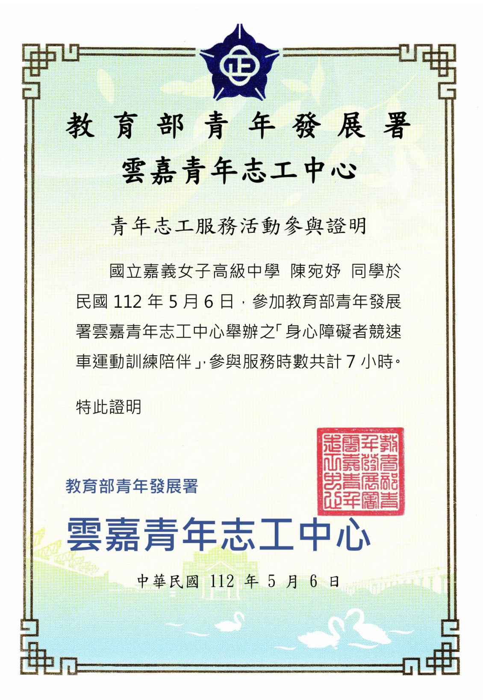

姓名：陳宛妤 Wan-yu Chen
生日：2005.01.12
學校：中原大學
科系：資訊管理系
居住地：Taiwan Chiayi City
Welcome to My Profile
興趣：看電影、旅行
專長：美術、影像設計
Language ability
Chineses
English
Japanese
特殊經驗
管樂班經驗：全國管樂第一
在地農業推廣：嘉義縣鹿草鄉

青年志工服務學習
-管樂班經驗-
國中管樂班經驗，是我人生中不可或缺的一段色彩，在那段回憶裡我們的辛苦著，卻始終 終團結且熱血，從而學習到團結的意義，所有管樂班的大家都朝著相同目標邁進，互相扶持鼓 勵，我也從一開始對樂理的一竅不通，到現在對法國號的涉略小有所成，到獲得冠軍這天帶給 我的是偌大的感動與認同感。
-在地農業推廣-
在高中的地理探查活動中，我們小組選擇了嘉義縣鹿草鄉農業推廣活動，促進地方農產品銷 售在當地農會的帶領下我們親身感受到了地方小農的不易，在這次探訪過後我們制訂了推廣計畫 希望能重振當地的農業發展，並吸引更多青年農夫加入。
-青年志工服務學習-
透過志工服務，我常常會反思自己在處理問題時的態度與方法。有時候在面對一些挑戰和困難 時，我會感到迷茫無措，但正是這些經歷促使我不斷調整和改進自己的方式，並提升解決問題的能 力。這些經驗對我來說非常印象深刻，透過扶輪競賽的體驗讓我學習到接納他人的不同看法與工作 方式，透過這樣的合作，我不僅增強了自己的溝通能力，還學會了如何在集體中達成共同目標。
專業技能
Python Programming
Java Programming

C++ Programming
工作經驗

南一書局 - 行政工讀生：製作教材、編寫檔案

築科公司 - 負責櫃台行政
南一書局 - 行政工讀生
這是我的第一次打工經驗，負責教材製作、編寫檔案和處理日常行政工作， 使我練就了快速適應環境的能力，學會了如何高效處理文件及同事間的協作。
築科公司 - 櫃台行政
負責櫃台接待、客戶服務以及一般行政事務，這份工作真的增強了我的溝通能力 和客戶服務技巧，如何處理事情且規整的完成，帶給我許多經驗與收穫。